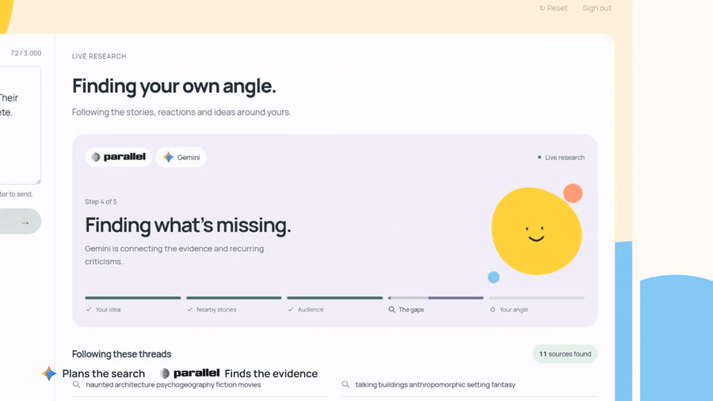
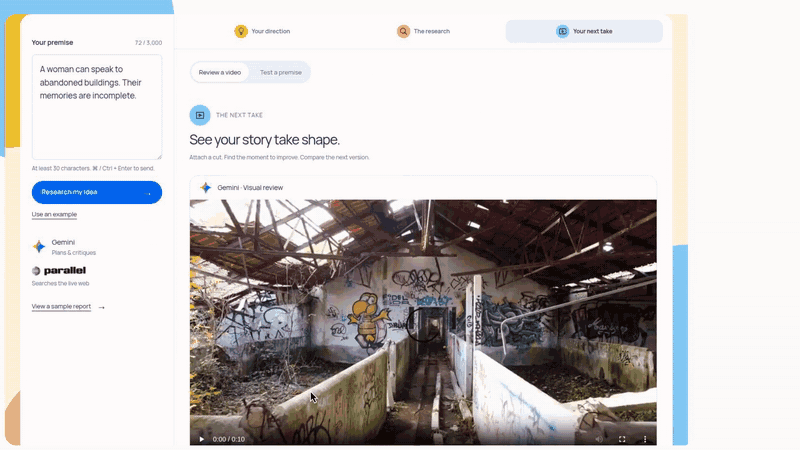
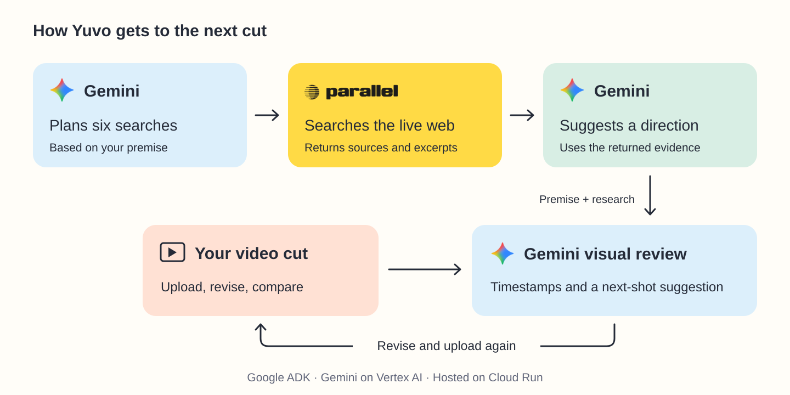
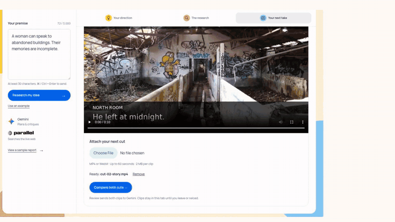

Inspiration
A woman can talk to abandoned buildings. Their memories are incomplete.
We kept coming back to that premise while building Yuvo. We could picture the setting. Deciding what should happen on screen was harder.
We wanted a creative partner that could research the stories around an idea, then stay useful once there was footage to review. The feedback had to lead to something a filmmaker could try in the next cut.
Concept illustration for the premise used in our demo.
What it does
Write a premise. Gemini plans the research, and Parallel searches for related stories and audience reactions. Yuvo brings the sources together and suggests a direction to explore. You can open the evidence behind the advice.
In our recorded demo, the research returned 11 sources. One direction was to let the building's physical damage shape what it could remember.

Then attach a real video. Yuvo uses agentic video understanding to review the frames against your premise and research. Click a timestamp to inspect a moment. Upload another cut, and Gemini compares both videos.
You can also revise the written premise in the Audience Room. Its synthetic critical perspectives help question the idea; they don't predict how a real audience will react.

These GIFs come from the demo recorded with live Gemini and Parallel responses. Waiting time is condensed; the larger feedback panels summarize the returned results.
How we built it
We built the app with Next.js and React. A Google ADK agent uses Gemini 3.8 Flash on Vertex AI to plan searches, turn evidence into a creative direction, and review video.
Parallel handles two concurrent research requests: one for related creative work, the other for audience and critic feedback. We retain the source links and excerpts, then validate Gemini's report against those sources.

For a comparison, we send both video files to Gemini with the premise and research context. The model can inspect what changed in the footage itself.
Cloud Run hosts the app. Secret Manager holds the credentials, and a runtime service account connects it to Vertex AI.
Challenges we ran into
The difficult part was getting feedback to separate observation from suggestion. A corridor can look right for a mystery without showing the story we described. We ask Gemini to say what is visible before proposing an edit, and keep this version's review focused on visuals.
We also had to make the research readable. Our early interface was a long report that kept asking you to scroll. We reorganized it into a creative direction, supporting research and a place to work on the next cut.
Uploads needed care too. If a request fails, the clip stays attached so the creator can retry. The prototype currently accepts clips up to 60 seconds and 2 MB each.
Accomplishments that we're proud of
Our favorite result came from the second video review.
The first cut showed an abandoned corridor. Gemini recognized the setting but pointed out that no protagonist was visible. We added a demolition deadline and conflicting room memories as text, then uploaded the revised cut.
Gemini noticed those additions. It also noticed that the woman was still missing. Its next suggestion was to show her making physical contact with the building.

That gave us a specific shot to make. We were glad the model could acknowledge a change without assuming it solved the problem.
What we learned
The premise and the footage can tell different stories. Keeping the original idea beside the video gives the critique something concrete to check.
We also learned to keep the scope of the evidence visible. Eleven search results can suggest a useful direction. They can't certify that an idea is original. A timestamped observation helps a creator inspect the feedback and decide whether to use it.
What's next for Yuvo
We want to save project history so creators can return to earlier research and cuts. Longer uploads will need a storage and processing flow beyond the current in-memory prototype.
We'd also like to test Yuvo with filmmakers working on their own footage. The question we'd ask is simple: did the feedback change what you shot or edited next?